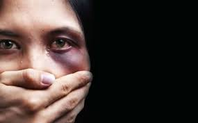

Violencia intrafamiliar
La violencia intrafamiliar es todo aquel acto de poder u omisión recurrente, dirigido a dominar, someter, agredir física, psico- emocional o socialmente a cualquier miembro de la familia. El eje central de la violencia es la necesidad de ejercer superioridad, dominio y control sobre otra persona y para lograrlo se ejerce agresión.¿QUIENES SON LOS PADRES QUE MALTRATAN?
Los padres maltratadores son personas diversas, pertenecen a todas las clases sociales, tienen distintos grados de educación y un muy bajo porcentaje tiene algún tipo de patología mental. Es decir, no existe un perfil típico del padre maltratador. Sin embargo, las investigaciones realizadas en los últimos años nos permiten hablar de "factores de riesgo", o características de los padres que los hacen de mayor riesgo para tener conductas de violencia con sus hijos.Los Centros para el Control y Prevención de las Enfermedades ("CDC", por sus siglas en inglés) ofrece los siguientes datos sobre la violencia familiar y las mujeres:
Alrededor de 4,8 millones de mujeres son víctimas de maltrato de sus parejas íntimas cada año.
La mayor frecuencia de violencia hacia un cónyuge está asociada con un mayor riesgo de que el cónyuge violento también maltrate a los hijos.
Existe una estrecha vinculación entre el acoso y otras formas de violencia: el 81 % de las mujeres acosadas por el esposo o la pareja actual o anterior, también sufrieron agresión física por parte de esa pareja, y el 31 % también sufrió maltrato sexual.
Las consecuencias psicológicas de las víctimas de violencia de parejas íntimas pueden incluir depresión, pensamientos e intentos suicidas, baja autoestima, abuso de alcohol y otras drogas, y trastorno de estrés postraumático.
Problemas de alcoholismo
Para la mayoría de los adultos, el consumo moderado de alcohol probablemente no es peligroso. Sin embargo, cerca de 18 millones de adultos en Estados Unidos tienen trastorno por el consumo de alcohol. Esto quiere decir que sus hábitos de consumo causan angustia y daños. Este trastorno puede ser de leve a severo, dependiendo de los síntomas. En ocasiones, el tipo severo es llamado alcoholismo o dependencia del alcohol.
El trastorno por consumo de alcohol es una enfermedad que causa:
Ansia: Una fuerte necesidad de beber
Pérdida de control: Incapacidad para dejar de beber una vez que se comenzó
Estado emocional negativo: Sentirse ansioso e irritable cuando no se está bebiendo
¿Qué son los atracones de alcohol?
Un atracón de alcohol consiste en beber tanto de una vez que el nivel de concentración de alcohol en la sangre es de 0.08% o más. Para un hombre, generalmente ocurre después de tomar 5 o más bebidas en unas pocas horas, mientras que para una mujer es después de unas 4 o más bebidas en pocas horas. No todos los que se dan atracones tienen trastorno por consumo de alcohol, pero tienen un mayor riesgo de presentarlo.
¿Cuáles son los peligros de consumir demasiado alcohol?
Beber demasiado alcohol es peligroso. Tomar en exceso puede aumentar el riesgo de ciertos tipos de cáncer. Puede conducir a enfermedades del hígado, como hígado graso y cirrosis. También puede causar daño al cerebro y otros órganos. Beber durante el embarazo puede dañar a su bebé. El alcohol también aumenta el riesgo de muerte por accidentes automovilísticos, lesiones, homicidios y suicidios.
Problemas de tabaquismo
La adicción a la nicotina se produce cuando se necesita la nicotina y no se puede dejar de usarla. La nicotina es la sustancia química del tabaco que hace difícil dejar de fumar. La nicotina produce efectos placenteros en el cerebro, pero estos efectos son temporales. Así que tomas otro cigarrillo.
Cuanto más fumas, más nicotina necesitas para sentirte bien. Cuando tratas de detenerte, experimentas cambios mentales y físicos desagradables. Estos son los síntomas de la abstinencia de nicotina.
Independientemente del tiempo que hayas fumado, dejar de hacerlo puede mejorar tu salud. No es fácil, pero puedes romper tu adicción a la nicotina. Hay muchos tratamientos eficaces disponibles. Pídele ayuda al médico.
Fuentes de consulta
Tabaquismo
Transtornos de alcohol
Tipo de violencia contra mujeres
Las mujeres y el alcohol
Violencia intrafamiliar
Violencia emocional

Problemas de alcoholismo

Tabaquismo

Violencia fisica